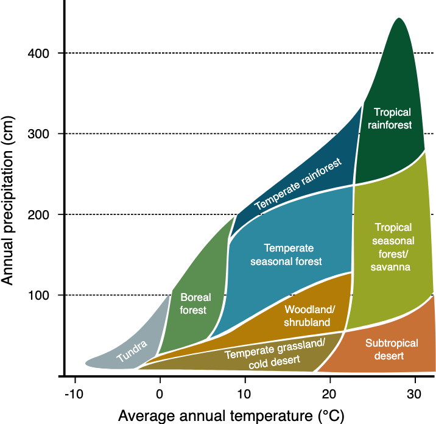
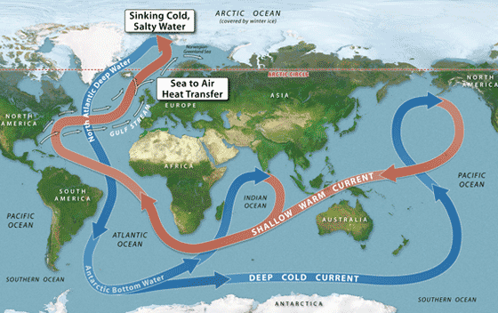

Direct Effects
Quick Def: Climate change has the potential to create increasingly severe droughts, forest fires, extreme storms, flooding, and habitat loss. It has the potential to displace millions of people and stop the ocean conveyor belt, which could make London colder than Quebec.
Increased Energy
An increase in global average temperature means an increase in the amount of energy in the earth system. Part of this energy is stored in the atmosphere, and part of it is held in the ocean surface. This combination will lead to more violent and damaging tropical storms. Scientists have seen an increase in the intensity of storms and expect this pattern to continue. Harsher storms combined with rising sea levels will lead to increased flooding, destruction, and loss of life due to storms.
Increased Evaporation
The increase in temperature will lead to an increase in evaporation and an increase in the atmosphere’s capacity to hold humidity. Unfortunately, scientists expect this to lead to more large rainstorms, and not to more consistent small rain showers. Soil moisture evaporation will increase, and large intense storms are not good at replenishing the lost water. This will lead to more droughts, which will negatively impact crops and put more strain on our aquifers. We have begun to see an increase in seasonal forest fires, and it is expected that this trend will continue. Fires are growing in number and intensity, destroying large amounts of forest habitat and releasing carbon into the atmosphere.
Altered Habitat
Terrestrial biomes are determined mainly by the temperature of the region, and the precipitation of the region. Both of these characteristics are being influenced by global warming all over the planet. These changes affect species and potentially make previous homes uninhabitable. This loss of habitat is not just affecting the polar bears standing on their melting chunks of ice. It isn’t just desertification at the equator. It affects all temperature or moisture-sensitive species. Scientists are seeing species that are capable of moving move towards the poles to stay in their preferred temperature ranges. Species that cannot move are dying out.
Ecosystem Type from Temperature and Precipitation

Altered Ocean Conveyor Belt
Altered Ocean Conveyor Belt
The ocean conveyor belt is a large system of currents that moves water all around the earth. It is driven by convection caused by density differences in the water. Salty cold water is denser and sinks, fresh warm water is less dense and rises. This system moves enormous amounts of energy around the planet and helps preserve the current climate conditions in many regions. There is a possibility that this conveyer belt could be interrupted by changes from global warming. Increased temperatures and increased ice melt are causing water near Greenland to become less dense. This change is disruptive because one of the main drivers of the belt is the sinking of cold salty water in this region. If the conveyor belt stops, the climate of several areas would be altered radically. Europe, for example, relies on the warm water the belt brings to its coast to preserve its moderate temperatures. Without the belt, the region would experience abnormally cold temperatures, especially in the winter.
Ocean Conveyor Belt

Sea Level Rise
Sea Level Rise
Increased global temperature will lead to an increase in land ice melt. It will also lead to a rise in the average sea temperature. As the oceans get warmer, the water (like all liquids) expands to take up more space. This expansion, combined with new water inputs previously locked up in land ice, will lead to a rise in sea levels. We are already starting to see some rising sea levels, and scientists predict that this will continue in the future. Rising sea levels threaten to destroy small island nations and coastal cities. If sea-level rise plays out as the models predict, millions of people will become refugees as their homes become permanently flooded. This rise will also destroy vital coastal habitats, which will negatively affect the species that depend on those habitats. This sea-level rise will flood wetlands, which are natural buffers for storm surges. With these buffers compromised, and with increased storm intensity, flooding will become an even more severe destructive force.